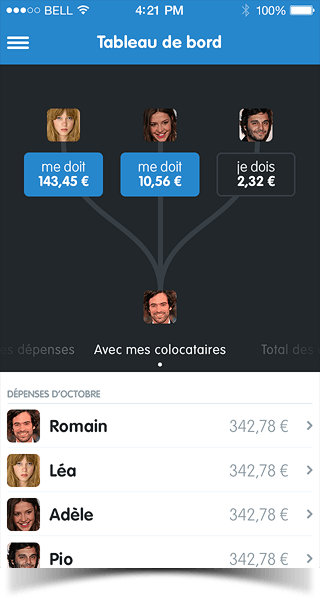
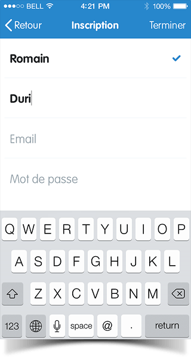
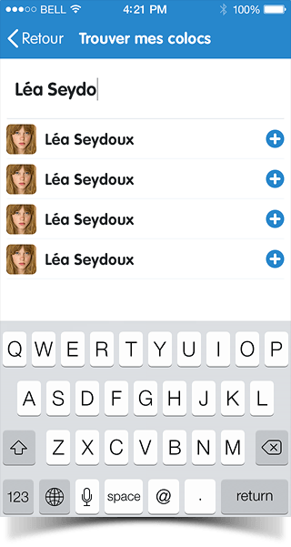

Hassle-free budget management with your roomates using
your personal data retrieved from everyday-life services.
1Brief
Kolok app was designed to help you efficiently manage your budget with your roomates. Simply connect the app with services like banks, insurance companies, supermarkets, telephone operators, and don’t care anymore.
Kolok app is a project done for a request for proposal issued by the FING, a french organization that gathers people’s personal data and encourages digital projects based upon these. Team was : Laure Betaille, Florent Grandval, Teddy Dedrie, Hugo Leloup, Adrien Vaucoret and Anthony Zaccardi.
As the lead designer on this project, I was responsible for the artistic direction. I designed the whole iOS application and supervised the desktop version. The deadline on this project was really aggressive, and all the design was done in less than two weeks, from wireframes to final mockups.
2Design Guidelines
The idea behind kolok is simple : getting the pain of managing expenses with your roomates out of the way and turn it into an enjoyable experience.
Therefore, i wanted the interfaces to be clear, precise and also joyful.
Everything starts withthe "K" icon
Well, of course, this was the last piece of design that was made, to make sure that it reflects the app’s personality.
Joyful look & feelcolor palette
Given my ambitions for the design, colors were a crucial point. The palette needed to be compatible on both mobile devices and desktop.
Relying a lot onTypography
I relied a lot on typography to bring personality to the app. Once again, I took care that my final choice was compatible within the viewports we wanted to address.
3Datavisualizations
Data is cool, and it’s even cooler when it can be visualized properly. We wanted our users to be aware of their financial situation at any time. right on the home screen, they can browse through four visualizations, and have a quick update on the state of the books.
The sinews of warwho owes who
Thanks to its extensive set of data, Kolok is able to figure out who owes who, and how much. No more fight over roomates accounts.
The current state of yourbank account
Kolok is directly connected to the bank account, therefore it’s easy to provide the users wih their bank balance.
Previous months'total expenses
Data is nothing if you can’t learn anything out of it. Thanks to this graph, roomates can check out total expenses of the previous months, and know when they should slow down.
4Final design
Data right from thehome screen
When launching Kolok, the users directly gets the state of the financial balance between the roomates.
Browsing through theexpenses details
The more services you connect, the better your experience gets. Expenses update automatically and are very detailed, like supermarkets receipts.
Improving people's lifeservices location
You can see right in Kolok where are located your services, so there’s no good reason not to use your connected ones.

Engaging the user through thewelcome process
One of the crucial UX point was the way the app would handle newly signed-up users, how they would create a roomate or join an existing one.
 